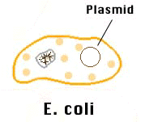

| Recombining DNA is the process by which rare proteins are obtained for medical purposes. In the past, these proteins had to be obtained from other sources. For example, before scientist knew how to create Recombinant DNA (rDNA), human growth hormone had to be taken from the pituitary glands of dead bodies, and it took 50 bodies to obtain one dose. Using rDNA, this amount can be produced in a day or two. To recombine DNA, one needs to obtain the bacteria that will be used. The most common is Escherichia coli (E. coli), a bacteria found in the intestines of many animals. E. coli bacteria contain plasmids, which are small rings of DNA. |
|  |
| The first step is to remove plasmids from the bacteria. They then must be combined with a restriction enzyme, a special protein that cuts the DNA in a certain place. The restriction enzyme cuts the DNA in such a way that it leaves a short portion of single-strand DNA on both sides (see animation below). The new gene's ends match that of the DNA that was cut, so it is able to bond with the severed ends with the help of another protein called DNA ligase. This reseals the circle. The DNA is then reinserted into the bacteria. Now, when the bacteria produces protein, it will also produce a protein that corresponds to the inserted gene. Also, all the new bacteria produced by the altered one will contain that gene as well. After many replications, the foreign gene can be removed from the bacteria, only instead of there being only one gene, there can be thousands or even millions of them. |
| After the animation is finished, hold the mouse down on the picture and move it to see the rDNA from different angles. |
| = Deoxyribose | = Phosphate |
| = Adenine | = Cytosine |
| = Guanine | = Thymine |
| (This animation is inaccurate in two ways. The first is that the DNA does not actually unwind during recombining. However, it is difficult to see what is happening when it is in the form of a double helix. The second is that the inserted gene would actually be much longer than two pairs of nucleotides. However, if it was as long as it really should be, the nucleotides would be too small to see.) |
| rDNA can also be formed using the DNA is viruses instead of bacteria. In this case, instead of the bacteria replicating, the virus will inject its DNA into a bacteria and take over the cell, which will produce many new virus cells with the cloned gene. |